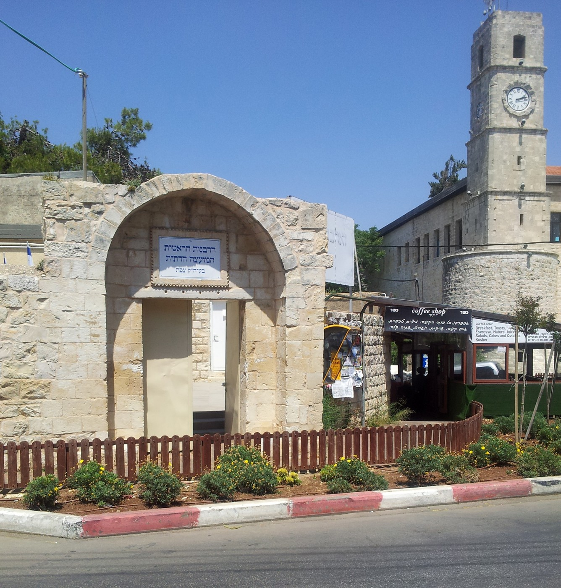

הרבנות הראשית - המועצה הדתית צפת נוסדה בשנת תשכ"ד (1964).
עוסקת בכל העניינים הקשורים לדת, כגון:
טהרת המשפחה, נישואין, בתי כנסת, כשרות ולהבדיל גם בזמנים פחות משמחים כגון הלוויות.
כמו כן, הרב הראשי לצפת הרה"ג שמואל אליהו שליט"א מקבל קהל לשאלות, התייעצות וכו'.
כל אחד מוזמן ומתקבל בסבר פנים יפות.
מייל לבקשת פגישה: harav52@gmail.com
מייל לשאלות הלכתיות: harav52S@gmail.com
טלפון לשכת הרב: 072-2211650